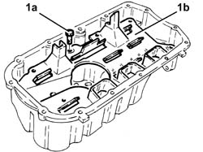
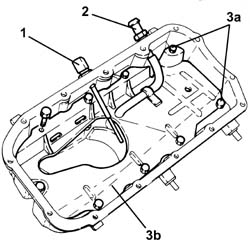
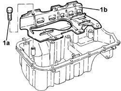

1020A46 OIL SUMP BULKHEAD - R R
- Path
- Procedures > 10 ENGINE UNIT > 1020 CRANKCASE SUMP AND COVERS > 1020A CRANK CASE OIL SUMP > 1020A46 OIL SUMP BULKHEAD - R R
- Kind
- repair procedure (removal / refitting; the operation number is the code)
- Applies to
- engines: 1.8 T.SPARK, 2.0 JTS, 1.9 JTD 16V; all production periods
- Interactive page
- https://sloeber94.github.io/elrnDB-aGt/en/#/125000919
Applies to: engines: 2.0 JTS; all production periods
 Removing
Removing
 Refitting
Refitting1. Undo the bolts (1a) and remove the crankcase oil sump partition (1b).

Applies to: engines: 2.0 JTS; all production periods
Refitting
RemovingPlace the crankcase oil sump partition back in its housing and secure it using the bolts.
Applies to: engines: 1.9 JTD 16V; all production periods
Removing
Refitting1. Undo and remove the engine oil level sensor.
2. Remove the connector for the condensation oil return pipe to the sump.
3. Undo the bolts (3a) and remove the crankcase oil sump partition (3b).

Applies to: engines: 1.9 JTD 16V; all production periods
Refitting
RemovingPlace the crankcase oil sump partition back in its housing and secure it using the bolts.
Place the connector for the condensation oil return pipe to the sump back in its housing.
Place the engine oil level sensor back in its housing and tighten it to the recommended torque.
 | Fastening | Component | Ø | Value (daNm) |
|---|---|---|---|---|
- | - | - | - | - |
Applies to: engines: 1.8 T.SPARK; all production periods
Removing
Refitting1. Undo the bolts (1a) and remove the crankcase oil sump partition (1b).

Applies to: engines: 1.8 T.SPARK; all production periods
Refitting
RemovingFit the crankcase oil sump partition and fix it tightening the bolts to torque.